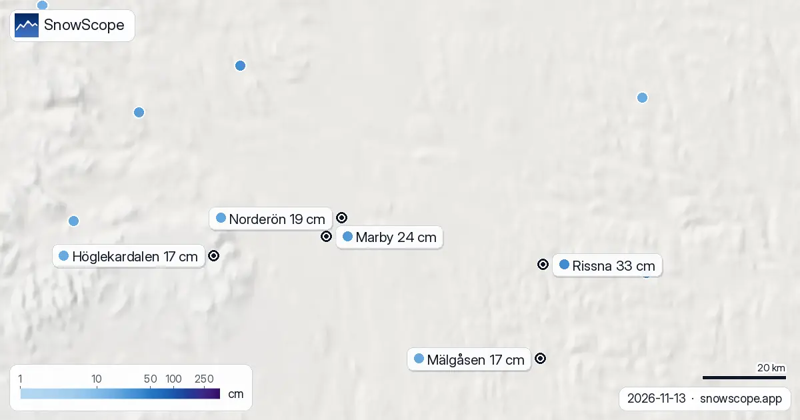

Snödjup i Kläppen: Sälen fick 45 cm på en natt, men mild luft är på väg (14 november 2026)
Västra Dalarna fick en rejäl dos snö på en enda natt. Väderstationen i Sälen, 13 km norr om Kläppen på 364 m, mätte 11 cm på morgonen den 12 november och 45 cm på morgonen den 13 november. Malungsfors, längre ner i dalen på 321 m, gick från 5 till 21 cm, och Gopshus nära Mora från 12 till 33 cm. Kläppens egen snösida rapporterade 25 cm i backarna samma dag.
Se snöprognosen för Kläppen live i SnowScope-appenSnödjup, pudervarningar och 3D-kartan, gratis.
Därför skiljer sig siffrorna
En station mäter på en enda plats i en glänta; en skidanläggning rapporterar vad den ser i backarna, ofta efter att snön har packats. Färsk, lätt snö sätter sig dessutom snabbt. Så 45 cm vid stationen i Sälen och 25 cm i Kläppen säger inte emot varandra: båda visar att det just nu ligger ett riktigt, djupt snötäcke i området.
Vår egen uppskattning för de senaste sju dagarna är ungefär 20 cm nysnö i Kläppen, vilket är den försiktiga änden av det som föll.

Det är veckan framåt som är problemet
Vi räknar med nästan ingen nysnö i dalen (355 m) och ungefär 5 cm på toppen (665 m) de kommande sju dagarna. I de andra prognoserna vi jämför med kommer nästan två tredjedelar av nederbörden i dalen som regn, och snögränsen stiger till ungefär 560 till 610 m. Det är nära liftarnas topp.
En del av nysnön blir alltså troligen blöt, tung och lägre de närmaste dagarna. Snö på marken smälter inte på en dag, men räkna inte med att de 45 cm ligger kvar nästa helg.
Vad som är normalt här i november
Våra 46 tidigare vintrar ger Kläppen ett normalt snödjup på bara 6 cm den 14 november och 15 cm den 30 november. En vinter av fem finns det ingen snö alls den 14 november. Dagens läge är alltså långt över det normala för datumet.
Det är i december som dalen brukar byggas upp: 24 cm den 15 december en normal vinter. Historiken visar också att området tappar snö: det typiska maxdjupet var 81 cm under de första 15 vintrarna och 58 cm under de senaste 15.
Har Kläppen öppnat?
Inte än. Den officiella säsongen pågår från 11 december 2026 till 4 april 2027, och den 13 november gick ingen av liftarna.
Tips för skidåkare
- Vill du se Dalarna vitt i helgen? Åk nu: prognosen tyder på att snön blir mjukare och krymper nästa vecka.
- Blöt snö på träden efter en sådan natt kan få grenar att falla ner över skogsvägarna; kör försiktigt.
- Inför premiären, följ Kläppens egen snösida; dess siffror kommer att skilja sig från stationernas, som förklaras ovan.
Fler kartor (externa webbplatser)
Referenser och källor
- SMHI, öppna data: dagligt snödjup vid svenska väderstationer www.smhi.se/data/meteorologi/ladda-ner-meteorologiska-observationer
- Kläppen idag (officiell snö- och liftstatus), läst 2026-11-13 www.klappen.se/klappen-idag/
- Kläppen, officiell sida: öppettider och liftstatus, läst 2026-11-13 www.klappen.se/om-klappen/oppettider/
Om siffrorna
Uppmätt snö: morgonavläsningar den 13 november 2026 vid de officiella väderstationerna i Sverige (SMHI öppna data), Finland (FMI öppna data, CC BY 4.0) och Norge (MET Norways stationsrapporter, CC BY 4.0, publicerade av Ogimet). Norges nationella snökarta seNorge (NVE och MET Norway, NLOD) ger uppskattningarna på ett rutnät om 1 km för backarna. Våra siffror: SnowScopes prognos för de kommande sju dagarna på tre höjder i skidområdet, jämförd med oberoende prognoser (ECMWF, ICON, GFS, GEM) för 14 till 20 november; snöhistorik för 46 tidigare vintrar (1980-81 till 2025-26), en modell av det förflutna korrigerad för höjd. Öppningsdatum: anläggningarnas egna sidor, lästa den 13 november 2026. Pistlängd och antal liftar: kartläggning i OpenSkiMap.
Officiella lavinprognoser: Lavinprognoser (Naturvårdsverket)
Citera den här rapporten
För forskning, undervisning eller press: siffrorna och diagrammen får återanvändas fritt under CC BY 4.0 med den här källhänvisningen.
SnowScope (2026), Snödjup i Kläppen: Sälen fick 45 cm på en natt, men mild luft är på väg (14 november 2026), https://snowscope.app/blog/sv/2026/11/klappen-snow-depth-14-november-2026.html, hämtad 2026-11-14
SnowScope (Atlas Labs). (2026, November 14). Snödjup i Kläppen: Sälen fick 45 cm på en natt, men mild luft är på väg (14 november 2026). SnowScope snow reports. https://snowscope.app/blog/sv/2026/11/klappen-snow-depth-14-november-2026.html
BibTeX
@misc{snowscope2026klappensnowdepth14novemb,
author = {{SnowScope (Atlas Labs)}},
title = {Snödjup i Kläppen: Sälen fick 45 cm på en natt, men mild luft är på väg (14 november 2026)},
year = {2026},
month = nov,
howpublished = {\url{https://snowscope.app/blog/sv/2026/11/klappen-snow-depth-14-november-2026.html}},
note = {Published 2026-11-14 13:59 UTC; accessed 2026-11-14}
}· CC BY 4.0 · Metoder, data och verktyg →
Kläppen: snö och temperatur efter höjd, i vinter jämfört med förra (verktyg) →
Följ Kläppen
Gratis: ett meddelande när nysnö är på väg, och prognosen varje morgon.
Fler snörapporter

Uppmätt snö i Uleåborg den 13 november 2026: 7 cm i Kaukovainio, 5 cm på Karlö, 8 cm i Ruukki, allt nytt sedan torsdagen. Lite mer på väg före måndagens töväder.

Uppmätt snö runt Östersund den 13 november 2026: 19 cm på Norderön, 24 cm i Marby, 33 cm i Rissna. Tre till fyra gånger det vanliga snödjupet för datumet, med en kall och torr helg framför sig.

Uppmätt snödjup i Oslo den 13 november 2026: 4 cm på Blindern, 31 cm vid Bjørnholt och 37 cm på Tryvannshøgda. Hur en vanlig mitt i november ser ut och vad helgen gör med snön.